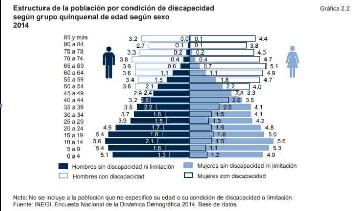
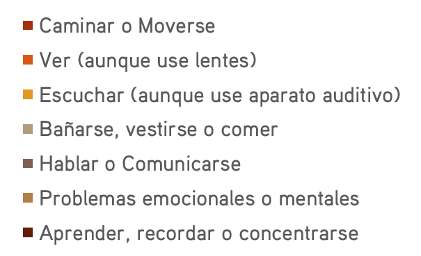
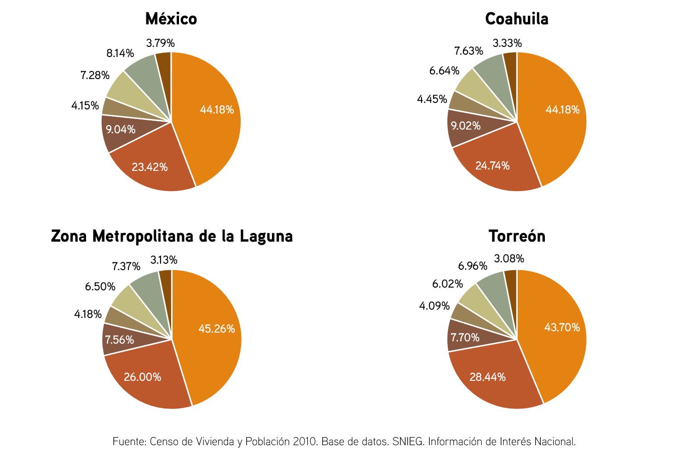
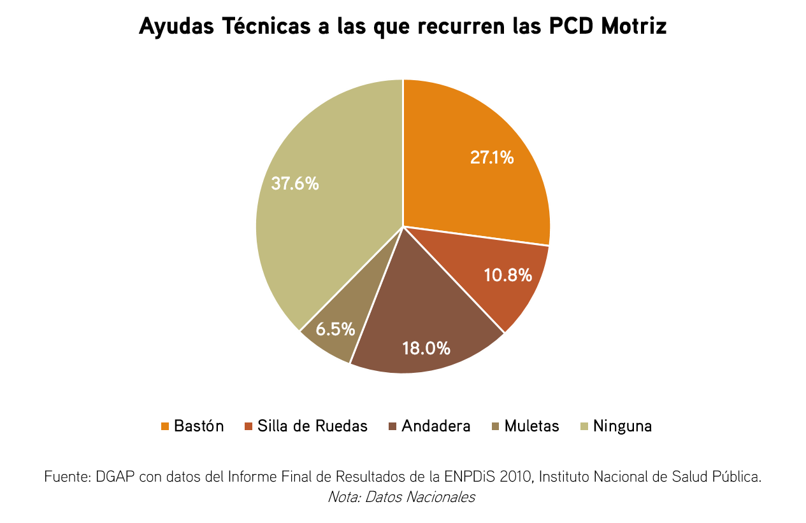
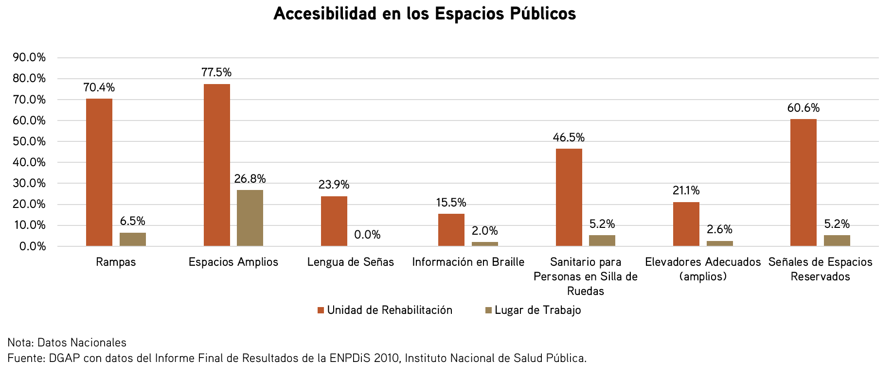
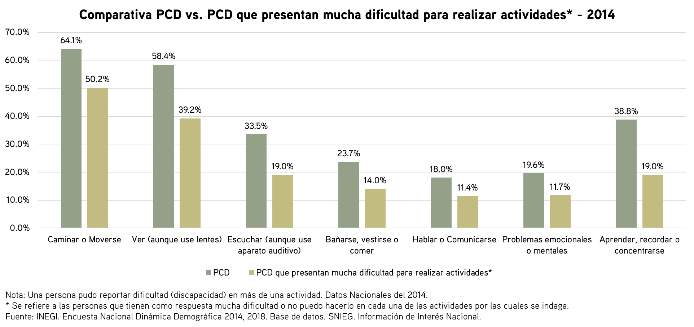
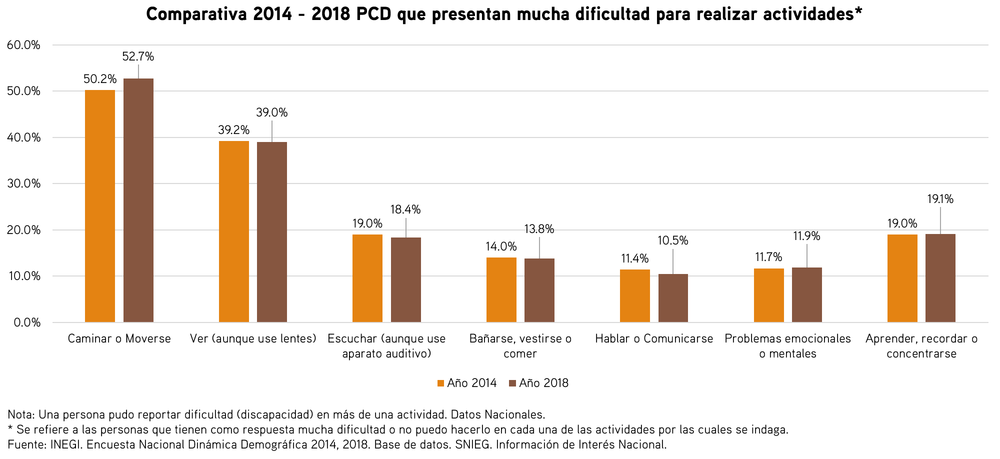
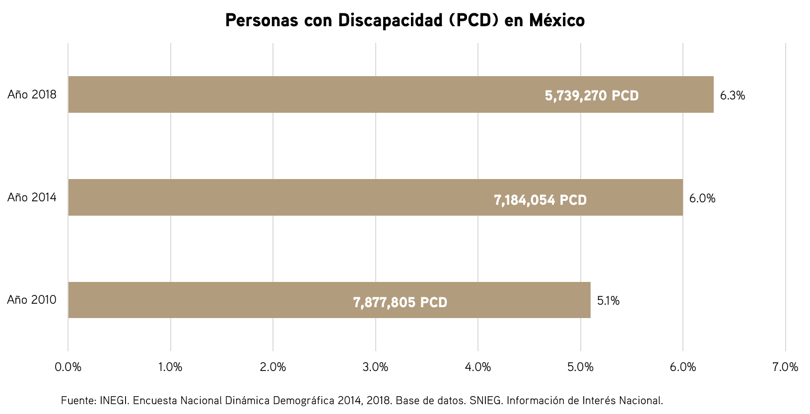

La discapacidad es un complejo fenómeno que imposibilita o dificulta la interacción de un individuo con su entorno social. Cuando las barreras con las que se enfrenta una persona con discapacidad (PCD) son eliminadas de la sociedad, dejando que ésta desarrolle su vida de la misma manera y facilidad que el resto de la población, se dice que se logra una inclusión plena y efectiva. Los lugares, servicios, utensilios e información deben ser igual de accesibles que para cualquier otro individuo, es por esto que la implementación de políticas públicas integrales es necesaria para asegurar una participación plena, justa y equitativa.
Aspectos físicos, mentales e intelectuales son abarcados cuando se habla de discapacidad. La discapacidad motriz restringe a un individuo en cuestiones de movilidad, la visual implica limitación para ver, aún y cuando se usan lentes, la del habla impide una comunicación clara, fácil y efectiva, la auditiva imposibilita el sentido del oído, aún usando un auxiliar auditivo, la múltiple limita en acciones cotidianas básicas, como lo es vestirse, bañarse o comer, la intelectual dificulta la concentración, impidiendo el aprendizaje, y la mental presenta restricciones en el funcionamiento neuronal. (SEDESOL, 2016)
La Encuesta Nacional de la Dinámica Demográfica del 2014, establece que tan sólo un 10.7% se da por nacimiento, mientras que un 41.3% se da por enfermedad, 33.1% por edad avanzada, 8.8% por accidente, 0.6% por violencia y 5.5% por otro tipo de causa, es decir que del 89.3% de las discapacidades desarrolladas a lo largo de la vida de un individuo, el 37.0% se le atribuye al envejecimiento poblacional. Y, es a partir de los 50 años, donde se nota que las discapacidades empiezan a surgir, especialmente a las mujeres.

El Censo de Población y Vivienda registró a 5,739,270 personas con una o más discapacidades, representando el 5.11% del total de la población mexicana para el 2010, de las cuales 122,185 residían en Coahuila, lo que representó un 4.45% de la población Coahuilense.
Las siguientes gráficas muestran el número de personas en nivel nacional, estatal, metropolitano y urbano, de acuerdo al tipo de discapacidad presentada, cabe resaltar que una persona puede presentar con más de una discapacidad a la vez, por lo que puede ser contabilizada más veces.


Como se puede notar, en todos los ámbitos prevalece la discapacidad motriz, por lo que se indagó sobre las ayudas técnicas recurridas en estas PCD, donde se encontró que el 37.6% no recurre a ninguna ayuda, mas el 27.1% opta por usar un bastón, 18% una andadera, 10.8% silla de ruedas y 6.5% muletas.

La Encuesta Nacional de Percepción de la Discapacidad en Población Mexicana 2010 (ENPDis 2010) destaca la escuela, el trabajo y el centro de rehabilitación como destinos claves para una PCD, es por esto que se elaboró un cuestionario para sondear las limitaciones que se enfrentan en estos ámbitos. Los resultados muestran que aún y cuando las unidades de rehabilitación deberían estar pensados para personas con algún tipo de discapacidad, no se llegan a porcentajes aceptables en materia de accesibilidad. Si este equipamiento no es accesible, mucho menos escuelas o lugares de trabajo, donde prevalece una población sin discapacidad alguna.




Si bien la tendencia es que la población con discapacidad aumente año con año, ya que conforme el individuo que envejece es propenso a desarrollar algún tipo de discapacidad, hay que pensar en qué infraestructura está proveyendo la ciudad ante la inevitable maduración poblacional.
Referencias.
Consejo Nacional para el Desarrollo y la Inclusión de las Personas con Discapacidad (2010). Encuesta Nacional de Percepción de la Discapacidad 2010. Obtenido de Instituto Nacional de Salud Pública:
https://encuestas.insp.mx/enpdis/descargas/Presentacion%20ENPDIS%20CONGISP2013.pdf
Instituto Nacional de Estadística y Geografía. (2010). Censo de Población y Vivienda 2010 - Sistema de Consulta Integración Territorial. Obtenido de Instituto Nacional de Estadística y Geografía:
https://www.inegi.org.mx/app/tmp/scitel/Default?ev=5
Instituto Nacional de Estadística y Geografía. (2018). Encuesta Nacional de la Dinámica Demográfica ENADID 2018 . Obtenido de INEGI:
https://www.inegi.org.mx/contenidos/programas/enadid/2018/doc/resultados_enadid18.pdf
Instituto Nacional de Geografía y Estadística. (2017). La Discapacidad en México, datos al 2014. Obtenido de INEGI:
http://internet.contenidos.inegi.org.mx/contenidos/Productos/prod_serv/contenidos/espanol/bvinegi/productos/nueva_estruc/702825094409.pdf
Secretaría de Desarrollo Social. (mayo de 2016). Diagnóstico sobre la situación de las personas con discapacidad en México. Obtenido de SEDESOL:
https://backend.aprende.sep.gob.mx/media/uploads/proedit/resources/diagnostico_sobre_l_8a347852.pdf